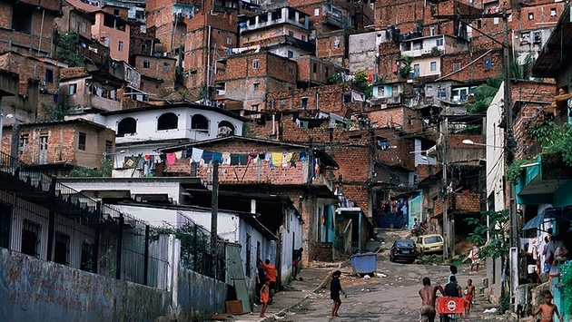

HISTORIA DEL CONSUMISMO
| Comenzaremos
con un poco de historia sobre le consumismo, para eso debemos
remontarnos al siglo XVII. En este periodo de tiempo la
mayoría de la gente era demaciado pobre y vivian su vidaon muy
poco dinero. La mayoría de las personas o familias solo gastaba su dinero en unos pocos articulos, los cuales eran los más necesarios para sobrevivir. Sin embargo no todas las personas estaban en estas conciones económicas. Ya que había también personas con más recursos y más posibilidades quienes marcaron la diferencia de clases en a sociedad. De hecho estas personas comenzaron a mostrar sus bienes o su dinero con lujos que obviamente otros no se podían costear para probar donde estaba el poder, y así diferenciarse del resto de mortales. |
 |
 |
Sin
embargo en el siglo XIX en los países al Noroeste de Europa
las economías y sociedades comenzaron a expandirse y los
salarios comenzaron a aumentar, dando así más recursos y
posibilidades para algunos más. Del mismo modo en el siglo XIX el gran desarrollo de la industria y nuevas tecnologías hicieron posible la producción de bienes o productos más baratos y accesibles para la gente más pobre, que en algún mmomento estas personas llegaron a considerar como lujos totalmente fuera de su alcance. Pero que ahora podían costearse. En resumen el precio de los productos básicos disminuyó y más personas pudieron adquirirlos. |